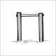

Список ключей
Cписок всех ключей в нашей системе, снабжаться комментариями и пояснениями. Как ими пользоваться, сказано в разделе ключей
| Номер | Радикал | Картинка | Мнемоключик и примеры |
|---|---|---|---|
| 1 | ⼂ |  |
ПЧЕЛКА
В зависимости от создаваемой мнемо сценки ее можно заменять на другие мелкие предметы. 义 仞 |
| 2 | ⼧ |  |
БЕРЕТ такой носят на голове 宗 寤 |
| 3 | 十? |  |
САБЛЯ ТУРЕЦКАЯ изогнутый вариант кит. цифры 10 戎 |
| 4 | ⼁ |  |
КОЛ шест, штырь и все из этой серии. 临 蓝 |
| 5 | ⼄乚 |  |
ПЕЛИКАН справо другое написание радикала. Кодируем как "безголовый пеликан" или рыболовный крючок. 乞 乿 |
| 6 | 人 𠆢 亻 | |
ЧЕЛОВЕК справа другие варианты написания. Крайний правый вариант можно кодировать как "худой человек" 仄 债 佘 |
| 7 | 亠 |  |
КРЫШКА ОТ КАСТРЮЛИ 亮 亢 |
| 8 | 丿 | |
ЛОМИК-ФОМКА таким вскрывают закрытые двери 价 |
| 9 | 一 |  |
КОПЬЕ также это китайская цифра 1 丛 但 |
| 10 | 冖 |  |
СКАМЕЙКА 冞 冥 |
| 11 | 厂 |  |
КРОКОДИЛЬЧИК СЛЕПОЙ потому что еще маленький. 压 厢 |
| 12 | 广 |  |
КРОКОДИЛ конечно, крокодил Гена 店 廓 |
| 13 | ⽧ |  |
КРОКОДИЛ С КРЫЛЫШКАМИ нелепейшее создание 疢 瘖 |
| 14 | ⼹ |  |
КОМАР 尋 寻 |
| 15 | 彑 |  |
ЛЫЖНИК это другое написание радикала "комар" 彔 |
| 16 | ⼯ |  |
ГАНТЕЛЯ 巩 巯 |
| 17 | 勹 𠃌 |  |
БУРАТИНО слишком любопытный для такого роста :) Справа безголовый буратино. 包 匐 局 |
| 18 | 刂 |  |
МЕЧ 剂 前 |
| 19 | 刀 |  |
АВТОМАТ "ШМАЙСЕР" это другое написание радикала МЕЧ, в иероглифах встречаются оба варианта. А так как они визуально не похожи, пришлось их разделить. 切 仞 乃 - "поломанный автомат" |
| 20 | 力 |  |
АВТОМАТ КАЛАШНИКОВА 劳 勉 |
| 21 | 丁 |  |
КАЙЛО есть такая штука у шахтёров. 厅 |
| 22 | 阝 |  |
УДОЧКА 陔 |
| 23 | 了 |  |
КОСА 疗 |
| 24 | 子 | |
ЕГИПЕТСКИЙ ПОСОХ или крест-анкх, странная такая штука, непонятная :) 孰 學 |
| 25 | ⼌ |  |
ТУРНИК в сценках можно заменять столом, где удобнее. 冈 |
| 26 | ⼉ |
ПОЛОМАННАЯ НОЖКА ага волочется сзади, жалко до слез:) 允 兇 |
|
| 27 | ⼐ |  |
КАСТРЮЛЯ в зависимости от мнемо сцены это может быть любая емкость кружка, стакан и т.д. 凼 函 |
| 28 | 尸 |  |
ТОПОР сами понимаете для чего :) 屆 屠 |
| 29 | 户 戶 |  |
ЭЛЕКТРИЧЕСКИЙ ТОПОР полный бред :) Когда к простому радикалу добавляется какой-то штрих, черточка и чтобы не придумывать в этом случае отдельный мнемоключик, мы просто "апгрейдим" старый мнемоключ. вспомните вариант с "казаком". "казак с саблей", "казак с ружьем" и т.д. 戾 戺 |
| 30 | ⼊ |  |
ВИГВАМ здесь живут индейцы, типа палатка 內 兩 |
| 31 | K |  |
|
| 32 | K | |
|
| 33 | K | |
|
| 34 | K | |
|
| 35 | K | |
|
| 36 | K | |
|
| 37 | K | |
|
| 38 | K | |
|
| 39 | K | |
|
| 40 | K | |
|
| NN | K | |
|